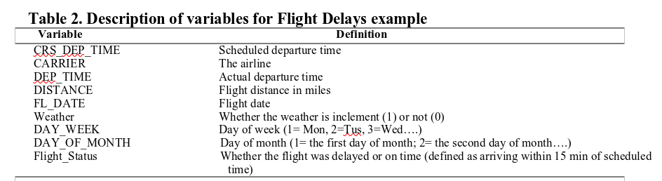
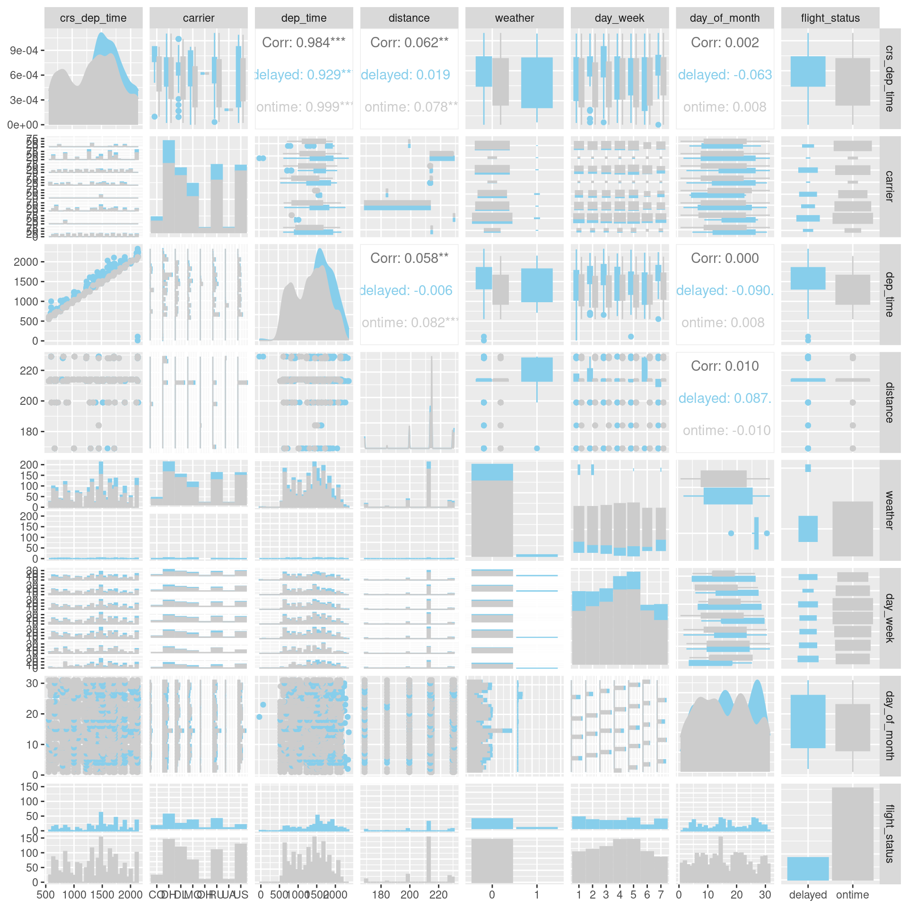

Code
## read the data and clean names
flights <- read_csv("FlightDelays.csv") %>%
clean_names() %>%
mutate(
carrier = factor(carrier),
day_week = factor(day_week),
weather = factor(weather))Flight delays are a significant concern in the airline industry. Apart from the inconvenience caused to travelers, delays also affect the reputation of airlines, negatively impacting market share. In this analysis, I utilize data for flights between New York and Washington DC. The central questions in the analysis are;
Please visit my rpubs site to see more data projects. Alternatively, copy and paste the link https://www.rpubs.com/Karuitha into your browser.
My data visualizations projects are available in my Tableau Public profile page or copy and paste the link https://public.tableau.com/app/profile/john.karuitha.
My Shiny web apps are available on this site. You can copy-paste this web address instead https://karuitha.shinyapps.io/
R (R Core Team 2022), Decision Tree Model, Random Forest Model, Quarto, Data Science, Machine Learning.
If airlines could accurately forecast delays, then they could mitigate the effects of the delays on the consumers. This intervention may save airlines substantial costs, and especially the cost related to consumer churn.
The file FlightDelays.csv contains information on all commercial flights departing the Washington, DC area and arriving at New York during January 2004.
## read the data and clean names
flights <- read_csv("FlightDelays.csv") %>%
clean_names() %>%
mutate(
carrier = factor(carrier),
day_week = factor(day_week),
weather = factor(weather))The data consists of 2201 rows and and 9 variables. For each flight (row of data), there is information on the distance of the route, the scheduled time and date of the flight, and so on.Table 2 describes variables in this file.

The variable that we are trying to predict is whether or not a flight is delayed (Fight_Status).
flights %>%
sapply(is.na) %>%
colSums() crs_dep_time carrier dep_time distance fl_date
0 0 0 0 0
weather day_week day_of_month flight_status
0 0 0 0 flights %>%
select(-fl_date) %>%
GGally::ggpairs(mapping = aes(color = flight_status, fill = flight_status)) +
scale_fill_manual(values = c("skyblue", "gray80")) +
scale_color_manual(values = c("skyblue", "gray80"))
In this section, I train a pair of models.
But first, I split the data into training set and testing set.
In this section, I partition the data into 60% for training and 40% for validation.
## Split the data into training and testing set
set.seed(300, sample.kind = "Rounding")
flights_split <- initial_split(flights, prop = 0.6, strata = flight_status)
flights_training <- flights_split %>% training()
flights_testing <- flights_split %>% testing()It is notable that there are 428 delays against 1773 on time departures. This level of class imbalance has an adverse effect on machine learning models. To correct this anomaly, I up-sample the training set such that it has a degree of class balance.
my_recipe <- recipes::recipe(flight_status ~ carrier + distance + weather + day_week + day_of_month, data = flights_training) %>%
themis::step_upsample(over_ratio = 1) %>%
step_dummy(weather, day_week) %>%
prep(training = flights_training)
## Apply to training data
flights_training <- my_recipe %>%
bake(new_data = NULL)
## Apply to testing data
flights_testing <- my_recipe %>%
bake(new_data = flights_testing)The training set is now balanced. The models can pick the signal for the previously under-represented class from the training set.
Next, we train the model using the training set and test the models using the validation or testing set.
I fit a classification tree to the flight delay variable using all the relevant predictors in FlightDelays.csv on training sets with maximum of 8 levels and set up cp = 0.001 and then plot the tree.
Note: cp refers to complexity parameter.
I then fit the classification tree.
## Fitting the regression tree on training data
flights_tree <- rpart(flight_status ~ .,
data = flights_training,
method = 'class',
control = rpart.control(cp = 0.001,
maxdepth = 8))
## Plotting the tree
rpart.plot(flights_tree)In the setting of decision tree, there is a technique called pruning. Pruning is a data compression technique for reducing the size of decision trees by removing non-critical and redundant sections of the tree.
The purpose of pruning is to reduce the complexity of the classifier. Pruning also helps improves predictive accuracy reducing of over-fitting.
In this section, I prune the tree we grew in section 3 above. In pruning this tree, I raise the complexity parameter to 0.1.
## Prunning the tree
pruned_tree <- prune(flights_tree, cp = 0.05)
## Plot the prunned tree
rpart.plot(pruned_tree)The pruned tree shows that the weather is the primary driver of flight delays.
In this section, I run the random forest model.
rand_model <- randomForest::randomForest(factor(flight_status) ~ .,
data = flights_training, importance = TRUE, proximity = TRUE)
summary(rand_model) Length Class Mode
call 5 -none- call
type 1 -none- character
predicted 1319 factor numeric
err.rate 1500 -none- numeric
confusion 6 -none- numeric
votes 2638 matrix numeric
oob.times 1319 -none- numeric
classes 2 -none- character
importance 40 -none- numeric
importanceSD 30 -none- numeric
localImportance 0 -none- NULL
proximity 1739761 -none- numeric
ntree 1 -none- numeric
mtry 1 -none- numeric
forest 14 -none- list
y 1319 factor numeric
test 0 -none- NULL
inbag 0 -none- NULL
terms 3 terms call Based on the extended decision tree model, I do predictions for both training and validations sets and report their confusion matrix respectively and other model performance metrics.
I now do the predictions on the test set and likewise, report the confusion matrix.
dt_prediction <- predict(flights_tree,
newdata = flights_testing, type = "class")
dt_prediction <- flights_testing %>%
select(flight_status) %>%
bind_cols(dt_prediction) %>%
set_names(c("flight_status", "estimate"))
head(dt_prediction)# A tibble: 6 × 2
flight_status estimate
<fct> <fct>
1 ontime ontime
2 ontime ontime
3 ontime ontime
4 ontime ontime
5 ontime ontime
6 ontime ontime For the decision tree model, the metrics are as follows:
dt_prediction %>%
conf_mat(truth = flight_status, estimate = estimate) Truth
Prediction delayed ontime
delayed 42 18
ontime 130 692dt_prediction %>%
conf_mat(truth = flight_status, estimate = estimate) %>%
autoplot()
dt_prediction %>%
conf_mat(truth = flight_status, estimate = estimate) %>%
summary()# A tibble: 13 × 3
.metric .estimator .estimate
<chr> <chr> <dbl>
1 accuracy binary 0.832
2 kap binary 0.291
3 sens binary 0.244
4 spec binary 0.975
5 ppv binary 0.7
6 npv binary 0.842
7 mcc binary 0.344
8 j_index binary 0.219
9 bal_accuracy binary 0.609
10 detection_prevalence binary 0.0680
11 precision binary 0.7
12 recall binary 0.244
13 f_meas binary 0.362 The metrics for the random forest model are as follows:
## Prediction on the testing set
rf_prediction <- predict(rand_model,
newdata = flights_testing, type = "class")
rf_prediction <- flights_testing %>%
select(flight_status) %>%
bind_cols(rf_prediction) %>%
set_names(c("flight_status", "estimate"))
## preview the predcitions
head(rf_prediction)# A tibble: 6 × 2
flight_status estimate
<fct> <fct>
1 ontime ontime
2 ontime ontime
3 ontime ontime
4 ontime ontime
5 ontime ontime
6 ontime ontime ## Confusion matrix on the testing set
rf_prediction %>%
conf_mat(truth = flight_status, estimate = estimate) Truth
Prediction delayed ontime
delayed 20 17
ontime 152 693rf_prediction %>%
conf_mat(truth = flight_status, estimate = estimate) %>%
autoplot()rf_prediction %>%
conf_mat(truth = flight_status, estimate = estimate) %>%
summary()# A tibble: 13 × 3
.metric .estimator .estimate
<chr> <chr> <dbl>
1 accuracy binary 0.808
2 kap binary 0.131
3 sens binary 0.116
4 spec binary 0.976
5 ppv binary 0.541
6 npv binary 0.820
7 mcc binary 0.182
8 j_index binary 0.0923
9 bal_accuracy binary 0.546
10 detection_prevalence binary 0.0420
11 precision binary 0.541
12 recall binary 0.116
13 f_meas binary 0.191 The Variable importance shows that weather is of primary importance in determining the timeliness of flights. Day of the month and the carrier are also important drivers of the timeliness of flights.
vip(flights_tree)vip(rand_model)